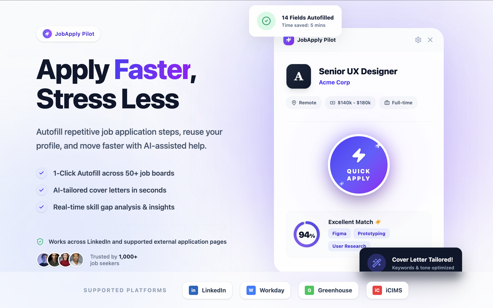
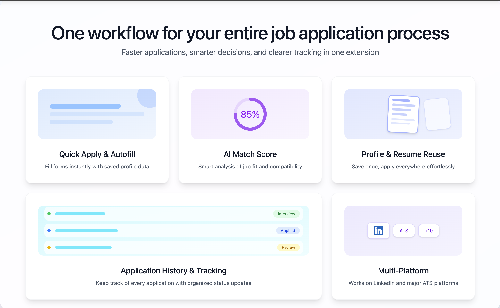
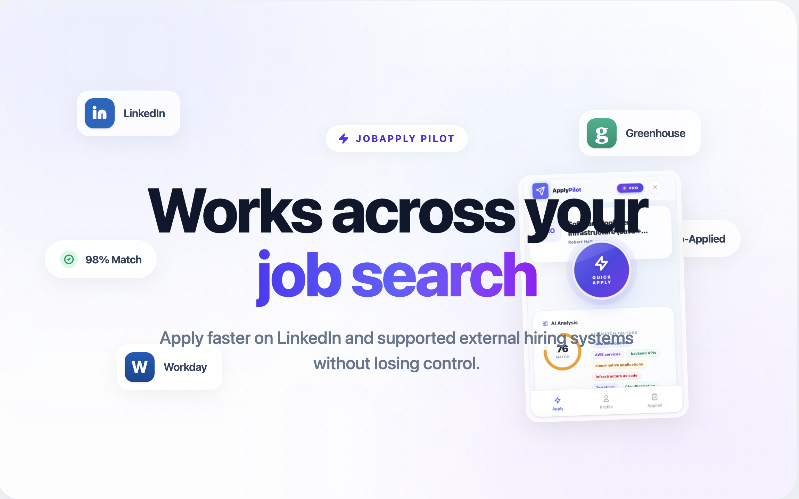

0+
form fields commonly reused across applications
JobApplyPilot combines quick apply automation, reusable profile data, AI job match scoring, and application tracking into one practical workflow for active job seekers.

form fields commonly reused across applications
from job discovery to submission tracking
major platform environments in coverage narrative
focus on reducing repetitive job application effort
Most job seekers lose time on repeated fields and fragmented follow-up. JobApplyPilot is built to compress those steps and make your application process more intentional.
Product capabilities are organized around real job search bottlenecks: speed, decision quality, reuse, and tracking.
Trigger faster application flows on compatible job pages.
Estimate role fit and prioritize where to spend your effort.
Highlight skill relevance signals from job descriptions.
Save personal details once and reuse them across forms.
Keep resume files ready and reduce repeated upload friction.
Track your submitted jobs to support follow-up consistency.
Browse key stages of the job application workflow and how JobApplyPilot supports each stage.
Begin applications with a faster execution path and autofill repeated form fields. This reduces context switching and lowers form completion friction.
Use match scoring and keyword relevance to decide where to invest effort first, especially when handling many active opportunities.

Run a more consistent process across LinkedIn and supported ATS-powered external hiring pages.

Designed for modern hiring workflows that span multiple systems, not a single job board.
Common questions from users evaluating a job application automation assistant.
No. It improves workflow speed and organization. Final decisions and submission accuracy remain with the user.
LinkedIn is a core scenario, and the workflow narrative also includes supported external ATS application environments.
To improve product discoverability for both classic search engines and AI assistants, while keeping claims aligned with real capabilities.
This section improves discoverability for users searching job application automation and AI-assisted workflow tools.
If you are applying to many roles each week, JobApplyPilot helps you spend less time on repetitive form work and more time on higher-value decisions.